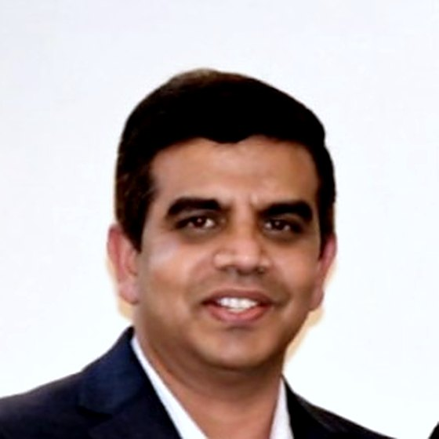

I build the platforms developers build on.
Hands-on principal architect in platform engineering and developer experience. I design mission-critical platforms for financial services, from internal developer platforms to database migrations and SRE tooling.

- 75%voluntary adoption of ICEDevX across ~3,000 developers
- Days to minutesapplication onboarding, 2,000+ apps onboarded
- 7 to 1-2 daysenvironment provisioning time
- 65Kdaily active users on the ILP portal framework
Where I focus
Developer platforms
Backstage-based internal developer platforms, developer portals and self-service onboarding that remove setup friction for thousands of engineers.
AI-assisted engineering
Analytics on Copilot, Cursor and Claude covering acceptance rates, cycle time, PR throughput and hours saved, to guide investment and planning.
Migration and reliability
Oracle to Cassandra migration with DataStax, SRE and observability frameworks, and cloud modernization on OpenShift, EKS, AWS and Cloud Foundry.
Experience
- Sep 2023 to present
New York, NYSenior Manager, Platform Engineering (Release Engineering)
Intercontinental Exchange (ICE)
- Architected and launched ICEDevX on Backstage, a unified developer platform across Azure DevOps and GitHub, going from concept to production in 6 months and reaching 75% voluntary adoption across ~3,000 developers.
- Designed self-service onboarding automation that cut application onboarding from 3-4 days to minutes, with 2,000+ applications onboarded.
- Optimized CI/CD and release tooling, reducing environment provisioning from 7 days to 1-2 days enterprise-wide.
- Built analytics on AI coding assistants (Copilot, Cursor, Claude) covering acceptance rates, cycle time, PR throughput and hours saved. Results informed leadership's decision to expand licenses and guided backlog planning as velocity increased.
- Set technical direction for a 20+ engineer onshore and offshore organization through five leads spanning Application Onboarding, Release Tooling, Portal Framework, and Developer Productivity Metrics (DORA) and Data Lake.
- Presented the architecture and results to a cross-business-unit steering committee and secured approval to proceed with ICEDevX and its roadmap.
- Ship platform releases twice monthly; mentored a university intern who converted to a full-time engineer.
- May 2022 to Sep 2023
Jacksonville, FLSenior Technology Strategy Manager
Black Knight
- Architected a custom developer-experience platform for application onboarding and won approval from senior leadership at Black Knight and ICE. It became the foundation for ICEDevX.
- Designed a Spring Boot framework integrated with the Azure DevOps ecosystem to standardize service delivery.
- Owned the enterprise Azure DevOps service and decommissioned legacy systems, with estimated one-time savings of $500K to $1M.
- Briefed C-suite leaders on legacy modernization roadmaps and led the corporate hackathon, engaging 100+ participants across engineering, product and business units.
- Worked as both architect and hands-on engineer for an 8-person team, reporting to the CTO of Technology and Infrastructure.
- Nov 2013 to Apr 2022
Jersey City, NJVice President, Software Engineering
JPMorgan Chase & Co.
- Lead Architect for migrating 10 mission-critical J.P. Morgan Markets applications from Oracle to Apache Cassandra after a data-center rack failure exposed availability risk. Improved availability, cut portal latency from ~8 to ~3 seconds, and lowered cost.
- Partnered with DataStax as an early enterprise adopter of Cassandra, and diagnosed a defect in the database's Java code that shipped as a fix in a DataStax release.
- Built SRE frameworks on OpenTelemetry, Dynatrace, Jaeger, Prometheus, Splunk and Envoy/Istio, adopted by 5 applications, improving trace and log visibility and roughly halving MTTR.
- Created Interactive Landing Pages (ILP), an Ext JS portal framework adopted by line-of-business teams for analytics dashboards, supporting 65K active users per day.
- Designed and launched a conversational virtual assistant framework for J.P. Morgan Access that answered customer questions before they reached manual support.
- Modernized 10 legacy applications onto GAIA, the firm's Pivotal Cloud Foundry-based internal cloud platform.
- Led a team of 6 and mentored 4 interns, all of whom converted to full-time.
Selected work
ICEDevX
Backstage-based internal developer platform across Azure DevOps and GitHub. Concept to production in 6 months, 75% voluntary adoption among ~3,000 developers.
AI coding assistant analytics
Measures acceptance rates, cycle time, PR throughput and hours saved across Copilot, Cursor and Claude, and informed license expansion decisions.
J.P. Morgan Markets: Oracle to Cassandra
Migrated 10 applications covering reference data, fixed income market data, research on 5,000+ companies and post-trade self-service. Latency fell from ~8 to ~3 seconds.
SRE and observability frameworks
Reusable telemetry building blocks that improved trace and log visibility and roughly halved mean time to recovery.
Interactive Landing Pages (ILP)
Ext JS portal framework that let line-of-business teams deliver analytics dashboards, supporting 65K active users per day.
Background
Earlier career
Morgan Stanley, Senior Software Engineer (2012 to 2013). Applications that enforce and validate Anti-Money Laundering rules, using Java, Oracle, DB2 and Savvion BPM.
S&P Global, Technical Specialist (2010 to 2012). Built Compliance Gateway, Ratings Portal and Structured Finance/CMBS applications, plus a custom inter-portlet communication framework.
Ness Technologies, Tech Leader (2004 to 2009). Led a team of 5 delivering solutions for Franklin Templeton, S&P and Finaplex (now Broadridge).
Oxygen Networks, Senior Software Engineer (2002 to 2004). Java rate-bidding applications for Bank of America, Citi and Wells Fargo.
Technology
Java, Spring, Hibernate, TypeScript, Node.js, React, Kafka, Cassandra, Oracle, SQL Server, Postgres, Azure DevOps, GitHub Actions, Kubernetes, OpenShift, EKS, AWS, Cloud Foundry, Dynatrace, Splunk, OpenTelemetry, Istio.
Education
Bachelor of Science in Electronics, Osmania University
Post Graduate Diploma in Computer Applications, Indira Gandhi National Open University
Volunteer leadership
Plainsboro Rescue Squad
Volunteer since 2021 | Technology Officer since 2023
- Technology Officer for a 50+ member volunteer emergency medical squad, owning communications, data systems, dispatch tools and digital resources so they are dependable when calls come in.
- Administer Google Workspace on a free license, giving new members seamless onboarding at no software cost.
- Design and maintain security access controls for the squad's building and systems.
- Manage the public website on WordPress and GoDaddy, covering content, domain, hosting and security upkeep.
Contact
If you are working on developer platforms, AI-assisted engineering or large-scale modernization in financial services, I would like to hear about it.